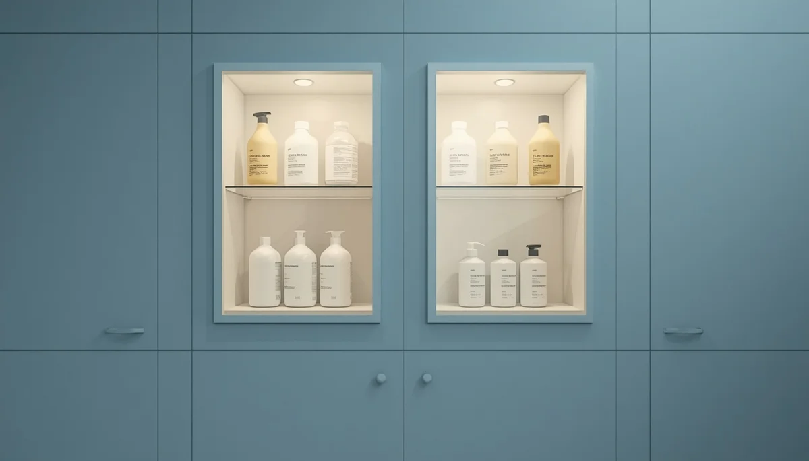

Almacenaje seguro de químicos y productos
La curiosidad innata de los niños durante sus primeros años les lleva a explorar todo aquello que está a su alcance, incluidos los armarios y rincones de almacenamiento. Los productos de limpieza, detergentes y sustancias corrosivas representan un riesgo elevado de intoxicación o quemadura química si no se guardan de forma adecuada.
Ubicación en altura y sistemas de bloqueo
La medida principal de prevención consiste en almacenar cualquier producto químico en armarios situados a una altura considerable o dotados de mecanismos de cierre y bloqueo seguros que impidan su apertura por parte de los menores. Nunca deben dejarse envases en el suelo o en superficies bajas mientras se realizan las tareas de limpieza.
Evitar trasvases a envases de uso alimentario
Un error frecuente y de alto riesgo es transferir líquidos de limpieza o sustancias tóxicas a botellas de agua, refrescos o envases de alimentos. Esto puede inducir a una confusión fatal por parte de los niños al asociar el recipiente con bebidas cotidianas; los productos deben conservarse siempre en sus envases originales y debidamente etiquetados.
"Mantener los productos químicos en alto, cerrados y en sus envases originales es una barrera indispensable para prevenir intoxicaciones infantiles."
Vigilancia activa durante las tareas domésticas
Durante la limpieza del hogar, es fundamental no perder de vista los productos activos ni dejar botes abiertos al alcance de la mano, garantizando así un entorno doméstico protegido de manera integral.
➔ Volver al índice de Prevención de Accidentes